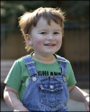

Pourquoi faire un don ?
L'autisme touche de nombreuses personnes et familles qui ont besoin de soutien, d’accompagnement et de ressources adaptées. Notre association œuvre chaque jour pour améliorer leur quotidien, mais nous avons besoin de vous pour continuer notre mission.

Votre don, un impact concret
En faisant un don, vous permettez :
- -L’organisation d’ateliers et d’activités adaptées pour favoriser l’inclusion et l’épanouissement des personnes autistes.
- -Le soutien aux familles qui font face à des défis quotidiens.
- -Des actions de sensibilisation pour informer et déconstruire les préjugés sur l’autisme.
- -La mise en place de projets innovants pour améliorer la qualité de vie des personnes concernées.
Chaque don compte
Que ce soit un don ponctuel ou mensuel, chaque contribution aide à financer des projets essentiels.
Un geste solidaire et dé fiscalisable
Selon votre situation, votre don peut être déductible des impôts. Un moyen simple de faire une bonne action tout en bénéficiant d’un avantage fiscal.
Faites un don !Merci pour votre générosité et votre engagement !
Agissez dès maintenant !
Ensemble, nous pouvons faire la différence. Soutenez notre cause en faisant un don dès aujourd’hui.